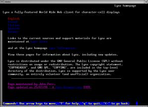
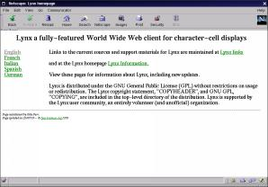

![[Foto del Autor]](../../common/images/John-Perr.gif)
por John Perr Sobre el Author: Usuario de linux desde 1994; es uno de los editores franceses de LinuxFocus. Contenidos: |
![[Ilustración]](../../common/images/lfmeta.gif)
Resumen:
Este tutorial describe como facilitar el mantenimiento de ficheros de texto o HTML, usando el preprocesador de macros M4.
Un lenguaje de macros se necesita con frecuencia cuando se usa un editor de texto. La mayoría de ellos ya tienen lenguajes de ese tipo entre sus características. Incluso el compilador de C provee ese tipo facilidades a los programadores a traves del preprocesador de C CPP. Cuando se usa para mantener ficheros de configuación o pequeños sitios web, el procesador de macros GNU/m4 puede ayudarnos a reducir la carga de trabajo. El procesador de macros GNU/m4 es parte de todas las distribuciones de linux y es estandar entre los usuarios de Unix.
De aquí en adelante, mostraremos como utilizar el procesador de macros GNU/m4 para mantener un conjunto de páginas HTML de un pequeño sitio web. Este sistema ayudará a mantener coherente el sitio entero. Por supuesto, hay docenas de maneras de obtener el mismo resultado con herramientas Unix; ¡esa es la belleza de Unix!.
Esta técnica se usa para la construcción del bien conocido sendamil.cf. Hay un kit de macros m4 disponible en la universidad de Berkley diseñado por Eric Allman.
El procesador de macros GNU/m4 no está limitado a edición de texto y HTML. Puede demostrar ser muy util para programadores que quieran extender las características de CPP o a aquellos quieran tener características equivalentes a las del CPP en otros lenguajes.
Un procesador de macros en un programa que interpreta comandos (llamados macros) definidos por el usuario. La macros están normalmente inmersas en el texto a procesar. Por ejemplo, la siguiente definición:
define(AUTHOR,`Agatha
Christie<a.christie@scotland-yard.gov>')
permite usar la palabra "AUTHOR" en cualquier lugar del texto. Esta palabra será reemplazada con "Agatha Christie<a.christie@scotland-yard.gov>" después de ser procesado el fichero con m4. Desde luego, se le puede dar más usos prácticos, como se verá después.
Supongamos que tenemos que mantener un sitio web que tiene las mismas páginas pero con idiomas diferentes. Además, cada página tiene la misma cabecera y el mismo pie con el objetivo de dar al sitio un aspecto coherente. A fin de mantener la cosas lo más simples posibles y para ello evitar el uso de un navegador en concreto para ver el resultado, nuestro ejemplo constará solo de texto. Esto permitirá a la gente que use lynx ver con facilidad nuestro sitio. Este es código HTML de una de las páginas:
<!-- Start of header -->
<HTML>
<HEAD>
<TITLE>Lynx homepage</TITLE>
<META name="description" content="Site lynx et m4">
</HEAD>
<BODY BGCOLOR="#FFFFFF" LINK="#008000" VLINK="#808080" ALINK="#8080FF">
<TABLE>
<TBODY>
<TR><TD align=middle colspan="2">
<H1>Lynx a fully-featured World Wide Web client for character-cell
displays</H1>
<TR><TD align="left" valign="top" width="15%">
<a href="./index-en.html">English</A><BR>
<a href="./index-fr.html">French</A><BR>
<a href="./index-es.html">Italian</A><BR>
<a href="./index-it.html">Spanish</A><BR>
<a href="./index-de.html">German</A><BR>
<TD align=left>
<!-- End of header -->
<P>Links to the current sources and support materials for Lynx are
maintained at <A HREF="http://www.crl.com/~subir/lynx.html">Lynx
links</A></P>
<P> and at the Lynx homepage
<A HREF="http://lynx.browser.org/">Lynx
Information.</A></P>
<P>View these pages for information about Lynx, including new
updates.</P>
<P>Lynx is distributed under the GNU General Public License (GPL) without
restrictions on usage or redistribution. The Lynx copyright statement,
"COPYHEADER", and GNU GPL, "COPYING", are included in the top-level
directory of the distribution. Lynx is supported by the Lynx user
community, an entirely volunteer (and unofficial) organization.</P>
<!-- Start of footer -->
</TBODY>
</TABLE>
<HR size="0" noshadow>
<FONT SIZE=-2>
<EM>Page maintained by John Perr.<BR>
Page updated on 25/07/99
- © <A HREF="mailto:webmaster@lynx.browser.org">lynx.browser.org</A>1999
</EM></FONT>
</BODY>
</HTML>
<!-- End of footer -->
Aquí está el resultado:
|  |  |
| con Lynx | con netscape |
Todas las páginas tendran el mismo estilo de cabecera y de pie, solo el idioma y el cuerpo de la página cambiaran. Ahora vamos a diseñar macros de m4 que se insertarán en el texto HTML de nuestras páginas para reemplazar todos los datos repetitivos.
Antes de entrar en detalles con las macros, echemosle una ojeada al siguiente ejemplo escrito con ese tipo de macros:
LYNX_TITRE(Lynx a fully-featured World Wide Web
client for character-cell displays)
LYNX_ENTETE(Lynx homepage)
<P>Links to the current sources and support materials
for Lynx are maintained at
<A HREF="http://www.crl.com/~subir/lynx.html">
Lynx links</A></P>
<P> and at the Lynx homepage
<A HREF="http://lynx.browser.org/">
Lynx Information.</A></P>
<P>View these pages for information about Lynx,
including new updates.</P>
<P>Lynx is distributed under the
GNU General Public License (GPL) without
restrictions on usage or redistribution.
The Lynx copyright statement, "COPYHEADER",
and GNU GPL, "COPYING", are included in the top-level
directory of the distribution.
Lynx is supported by the Lynx user community,
an entirely volunteer (and unofficial) organization.</P>
LYNX_PIED
De esa manera, escribir páginas HTML es más sencillo y el texto no se pierde entre etiquetas (tags) HTML. Para escribir con otros idiomas, se tendrán que hacer traducciones de este fichero. La versión francesa sería:
LYNX_TITRE(Lynx un navigateur en mode console)
LYNX_ENTETE(Un site pour les utilisateurs de lynx)
<P>Visitez le
<A HREF="http://lynx.browser.org/">
site officiel de lynx</A>
pour plus d'informations sur Lynx,
y compris les nouvelles mises à jour.</P>
<P>Les liens vers les sources de la version
courante et divers supports pour Lynx sont
tenus à jour sur le site
<A HREF="http://www.crl.com/~subir/lynx.html">
liens Lynx</A>.</P>
<P>Lynx est distribue dans le cadre de la lisence GNU
(General Public License - GPL)
sans restriction sur son utilisation ni sa distribution.
Les mentions des droits de reproduction de Lynx, "COPYHEADER",
et GNU GPL, "COPYING", sont inclus dans la racine de
l'arborescence de la distribution. Lynx est supporte par
la communaute des utilisateurs de Lynx, une communaute
entièrement benevole (et non-officielle).</P>
LYNX_PIED
Para cada idioma, las mismas macros LYNX_TITRE, LYNX_ENTETE y LYNX_PIED se usan con argumentos diferentes. Estas 3 macros serán un sustituto eficiente para el código HTML de la cabecera y el pie. Esta es la principal ventaja de este sistema: la definición de la cabecera y el pie es consistente para todas las páginas del sitio. Si el estilo de la cabecera o el pie tiene que ser cambiado, solo habrá que cambiar la definición de la macro, en vez de editar cada página a mano.
Arriba, se han usado 3 macros para conseguir la mayoría del formateo. Aquí esta el fichero de definición de esas macros. Los comentarios están después:
divert(-1)
# Fichero mac.css
# Version 1.0 M4 macros para Lynx
#
# Se define un fichero trans-LANG.m4 para cada
# idioma, basado en del idioma frances.
# Si no existe fichero de traducción,
# Francés es la opción por defecto.
#
divert(0)
changequote({,})dnl # Cambia los caracteres de citas o comillas (quotes) a llaves
ifdef({LANG},,{define({LANG},{fr})})dnl # Por defecto = french
include({trans-}LANG{.m4})dnl # Llama al fichero de traducción
undefine({format})dnl # Elimanr la definición de format
define({_ANNEE_},esyscmd(date +%Y))dnl #Año actual
define({LYNX_TITRE},{define(_TITLE_,$1)})dnl # Primera macro
dnl # Segunda macro
define({LYNX_ENTETE},{<!-- Header start -->
<HTML>
<HEAD>
<TITLE>$1</TITLE>
<META name="description" content="Site lynx and m4">
<META name="keywords" content="m4, lynx, GPL">
</HEAD>
<BODY BGCOLOR="#FFFFFF" LINK="#008000" VLINK="#808080" ALINK="#8080FF">
<TABLE>
<TBODY>
<TR><TD align=middle colspan="2">
<H1>_TITLE_</H1>
<TR><TD align="left" valign="top" width="15%">
<a href="./index-en.html">_ANGLAIS_</A><BR>
<a href="./index-fr.html">_FRANCAIS_</A><BR>
<a href="./index-es.html">_ESPAGNOL_</A><BR>
<a href="./index-it.html">_ITALIEN_</A><BR>
<a href="./index-de.html">_ALLEMAND_</A><BR>
<TD align=left>
<!-- end of header -->})dnl
dnl # Tercera macro
define({LYNX_PIED},{<!-- Start of footer -->
</TBODY>
</TABLE>
<HR size="0" noshadow>
<FONT SIZE=-2>
<EM>_MAINTENEUR_.<BR>
_MAJ_
esyscmd(date +%d/%m/%y)
- © <A HREF="mailto:webmaster@lynx.browser.org">
lynx.browser.org</A>
_ANNEE_</EM></FONT>
</BODY>
</HTML>
<!-- End of footer -->})dnl
Las lineas entre "divert(-1)" y "divert(0)" son comentarios. "Divert" es una de las macros predefinidas del procesador m4. Está diseñada para desviar la salida del procesador. Usando -1, le decimos al procesador que no escriba las lineas siguientes al final del fichero HTML, que es lo que el quiere.
La macro "changequote" redefine los "quotes" (comillas) que se usan normalmente para citar (quote) los argumentos de las macros. Son reemplazados aquí con llaves porque en ficheros de texto, y especialmente en los escritos en francés, las comillas (simples en este caso) se usan con frecuencia y conducirían a malinterpretaciones de las macros. Las llaves se usan con menos frecuencia en texto o en HTML, es por eso por lo que se han elegido aquí. (N. del Traductor: quotes son tanto las comillas simples como las dobles, tanto abiertas como cerradas, o en definitiva cualquier cosa que se use para que lo de dentro se tome tal cual. En m4 se usan por defecto las comillas simples de abrir y cerrar y eso es lo que el autor cambia en este caso).
La macro "ifdef" se usa para comprobar si la macro LANG está definida y para, en caso de que no lo esté, darle el valor "fr" que es el valor por defecto. El objetivo de la macro LANG es fijar el idioma o lenguaje. En las lineas de abajo, veremos como definirla cuando se llama a m4 (en la linea de comadn), a fin de elegir el lenguaje de la página HTML.
La linea "include" tiene el mismo significado que en C y se usa para incluir un fichero externo. La usamos para cargar las definiciones de macros específicas del idioma usadas en la cabecera y en el pie. Aquí está su contenido en función del lenguaje:
divert(-1)
# Fichero trans-fr.m4
# Definiciones para francés
divert(0)
define({_ANGLAIS_},{Anglais})dnl
define({_FRANCAIS_},{Français})dnl
define({_ITALIEN_},{Espagnol})dnl
define({_ESPAGNOL_},{Italien})dnl
define({_ALLEMAND_},{Allemand})dnl
define({_WEBMASTER_},{John Perr})dnl
define({_MAINTENEUR_},{Page maintenue par _WEBMASTER_})dnl
define({_MAJ_},{Date de mise à jour:})dnl
divert(-1)
# File trans-en.m4
# Definitions for english
divert(0)
define({_ANGLAIS_},{English})dnl
define({_FRANCAIS_},{French})dnl
define({_ITALIEN_},{Spanish})dnl
define({_ESPAGNOL_},{Italian})dnl
define({_ALLEMAND_},{German})dnl
define({_WEBMASTER_},{John Perr})dnl
define({_MAINTENEUR_},{Page maintained by _WEBMASTER_})dnl
define({_MAJ_},{Page updated on })dnl
Si tu hablas Español, Italiano o Alemán, deberás ser capaz de escribir ficheros similares para esos lenguajes.
La linea "undefine" elimina la definición por defecto de la macro predefinida "format" porque no se usa aquí. Si esta linea se omitiese, cada vez que la palabra "format" apareciese en el texto desaparecería a menos que estuviera entrecomillada (con las quotes o comillas que tengamos establecidas), por ejemplo, rodeada con llaves. Ese tipo de practicas no son aconsejables cuando se edita una simple página web.
Ahora viene la definición del año actual. Se obtiene de la macro "easycmd" que llama al comando unix "date". Este comando se usa también dentro de la definición del pie a fin de imprimir la fecha en la que se actualizó la página.
La linea siguiente define la primera de las tres macros principales: LYNX_TITRE. Esta macro define otra macro llamada _TITRE_. Esta doble definición es necesaria para poder usar el título varias veces dentro de la cabecera y el pie de la página partiendo de una sola definición. Fíjate en el uso de $1 para referirse al primer parámetro de la macro.
Las lineas siguientes definen las otras dos macros principales: LYNX_ENTETE y LYNX_PIED que corresponden a los contenidos de la cabecera y el pie de nuestra página HTML, excepto por los elementos variables de la página. Estos son:
El "dnl" que aparece al final de cada linea es una macro predefinida que significa "Delete to New Line" (borra hasta nueva linea). Con "dnl" m4 no genera una linea vacia cuando interpreta una macro.
Ahora que nuestro sistema está construido, la generación de una página Web a partir de los ficheros se hace con el siguiente comando:
Donde "XX" es el código a usar para cada idioma. Fijate que la opción -D se usa, como con gcc, para definir una macro desde la linea de comando.
La tabla siguiente presenta los ficheros y su uso en esta apliación.
Los siguientes ficheros se usan para generar páginas HTML:
| index-XX.html | El cuerpo de la página, que es el texto escrito por el autor o el traductor. Es diferente para cada página y cada idioma. (el código es XX=en para Inglés, es para Español, etc...) |
| mac.css | Definiciones estandar. ESte fichero es común a todas las páginas y todos los idiomas. se puede ver como un tipo de hoja de estilos. |
| trans-XX.m4 | Definiciones estandar para un idioma. este fichero es común a todas las páginas de un idioma,(el código es XX=en para Inglés, es para Español, etc...) |
A pesar de su potencia, el procesador de macros m4 no se puede comparar con un lenguaje de scripting como Perl o Tcl. De todas formas, una vez conoces sus peculiaridades, es una herramiente rápida y mañosa para ayudar a procesar ficheros de texto. Para aprender más, consulta la documentación incluida con tu distribución. Deberías encontrar un tutorial de m4, de cerca de 30 páginas de longitud, que cubre todos los aspectos del procesador de macros GNU/m4. También puedes echarle una ojeada al sitio del Linux User Group of Bordeaux (ABUL) que se mantiene con un kit de macros m4, similares a las presentadas aquí.
GNU/m4 esta disponible desde
ftp://prep.ai.mit.edu/pub/gnu/m4-1.4.tar.gz
Bajar los ficheros presentados aquí: The Lynx m4 macro kit
Gracias a Paul Kienzle por revisar este artículo.
|
Contactar con el equipo de LinuFocus
© John Perr LinuxFocus 1999 |
Translation information:
|
1999-05-23, generated by lfparser version 0.6
{kind=link}
{kind=link}